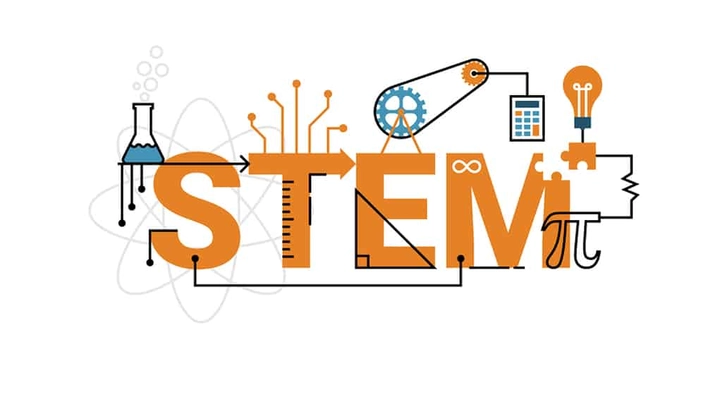
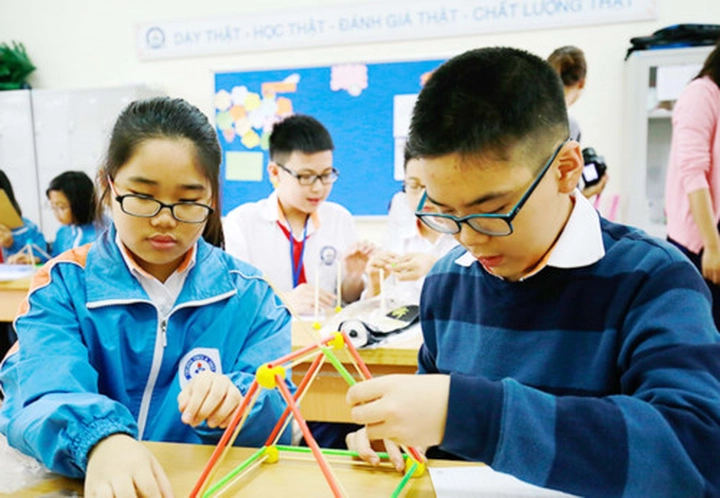
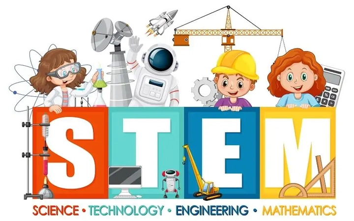

STEM là gì? Khám phá mô hình giáo dục hiện đại STEM
Ngày nay chúng ta nghe báo chí nhắc tới rất nhiều về STEM – một mô hình giáo dục hiện đại, giúp học sinh phát triển tư duy phản biện, khả năng giải quyết vấn đề và kỹ năng sáng tạo.
Khác với phương pháp học truyền thống, STEM kết hợp lý thuyết với thực hành, đưa học sinh vào các dự án thực tế, từ lập trình, robot đến mô hình khoa học. Trong kỷ nguyên số và cách mạng công nghiệp 4.0, STEM trở thành chìa khóa để thế hệ trẻ thích ứng, đổi mới và sáng tạo trong mọi lĩnh vực, từ khoa học, kỹ thuật đến kinh tế và nghệ thuật.
Hãy cùng TriThucWorld tìm hiểu về STEM và khám phá những cơ hội, thách thức cũng như ứng dụng thực tiễn của nó trong đời sống hiện đại.
1. STEM là gì?
STEM là viết tắt của Science (Khoa học), Technology (Công nghệ), Engineering (Kỹ thuật) và Mathematics (Toán học). Đây là một mô hình giáo dục tích hợp, nhấn mạnh việc học liên môn, kết hợp giữa lý thuyết và thực hành, nhằm trang bị cho học sinh những kỹ năng toàn diện và tư duy linh hoạt.
Thay vì học kiến thức theo từng môn rời rạc, STEM khuyến khích học sinh ứng dụng kiến thức khoa học, toán học và công nghệ vào các dự án thực tế, từ đó phát triển khả năng giải quyết vấn đề, tư duy phản biện, sáng tạo và kỹ năng làm việc nhóm.

Mục tiêu của STEM không chỉ là truyền đạt thông tin hay kiến thức đơn thuần mà còn là rèn luyện khả năng tư duy logic, phân tích dữ liệu và khai thác công nghệ để giải quyết các vấn đề thực tiễn.
Trong bối cảnh kỷ nguyên số và cách mạng công nghiệp 4.0, STEM trở thành công cụ thiết yếu giúp thế hệ trẻ thích ứng nhanh với môi trường thay đổi, nâng cao khả năng đổi mới và sáng tạo, đồng thời trang bị năng lực để tham gia vào các ngành nghề hiện đại, từ khoa học, kỹ thuật, công nghệ đến kinh tế, giáo dục và nghệ thuật.
Hơn nữa, STEM còn tạo ra một nền tảng tư duy liên môn, giúp học sinh không chỉ học kiến thức mà còn biết cách tích hợp các lĩnh vực khác nhau để tìm ra giải pháp tối ưu. Nhờ đó, STEM không chỉ là mô hình giáo dục mà còn là hành trang quan trọng để chuẩn bị cho thế hệ trẻ bước vào thế giới nghề nghiệp phức tạp, cạnh tranh và đầy cơ hội sáng tạo.
2. Lịch sử hình thành STEM
Khái niệm STEM xuất hiện từ cuối những năm 1990 tại Hoa Kỳ khi các nhà giáo dục nhận thấy rằng phương pháp học truyền thống tách rời các môn học khiến học sinh khó áp dụng kiến thức vào thực tiễn. Trước đó, học sinh học Toán, Khoa học, Kỹ thuật và Công nghệ theo từng lớp riêng biệt mà thiếu sự kết nối, dẫn đến kỹ năng tư duy phản biện và sáng tạo bị hạn chế.
Đến đầu thế kỷ 21, STEM trở thành một mô hình giáo dục toàn cầu nhờ sự phát triển mạnh mẽ của công nghệ số, Internet, dữ liệu lớn và robot, cùng nhu cầu nhân lực sáng tạo, linh hoạt và có kỹ năng giải quyết vấn đề phức tạp. Nhiều quốc gia đã đưa STEM vào chương trình giáo dục từ tiểu học đến đại học, nhằm chuẩn bị cho thế hệ trẻ thích ứng với các ngành nghề tương lai.
Đôi khi STEM cũng được mở rộng thành STEAM khi kết hợp thêm Art (Nghệ thuật), nhằm phát triển tư duy sáng tạo toàn diện và khuyến khích sự đổi mới trong mọi lĩnh vực. Việc đưa nghệ thuật vào STEM giúp học sinh học cách kết hợp tư duy logic và trực quan, phát triển óc thẩm mỹ và khả năng sáng tạo vượt giới hạn thông thường.
3. Các thành phần của STEM
STEM bao gồm bốn lĩnh vực cơ bản nhưng gắn kết chặt chẽ với nhau:
-
Khoa học (Science): Nghiên cứu tự nhiên, vật lý, hóa học, sinh học… giúp học sinh hiểu được các hiện tượng, quy luật tự nhiên và phương pháp nghiên cứu khoa học.
-
Công nghệ (Technology): Ứng dụng các công cụ số, phần mềm, lập trình, AI, dữ liệu lớn để giải quyết vấn đề thực tế.
-
Kỹ thuật (Engineering): Thiết kế, xây dựng và tối ưu hóa sản phẩm, hệ thống hoặc công trình dựa trên kiến thức khoa học và toán học.
-
Toán học (Mathematics): Nền tảng tư duy logic, khả năng phân tích, mô hình hóa và giải quyết vấn đề.
Điểm đặc biệt của STEM là tính liên môn, học sinh không học riêng rẽ từng môn mà học cách kết hợp chúng để giải quyết vấn đề thực tế. Ví dụ, khi thiết kế một chiếc cầu mô hình, học sinh sẽ áp dụng kiến thức toán học để tính toán, khoa học để chọn vật liệu, kỹ thuật để xây dựng và công nghệ để mô phỏng và kiểm thử thiết kế.
Nhờ sự kết hợp này, STEM giúp học sinh phát triển tư duy logic, khả năng sáng tạo, kỹ năng hợp tác và năng lực giải quyết vấn đề, những kỹ năng quan trọng trong thế giới hiện đại.
4. Tầm quan trọng của STEM trong giáo dục hiện đại
STEM không chỉ dạy kiến thức mà còn rèn luyện các kỹ năng mềm và kỹ năng tư duy. Trong bối cảnh toàn cầu hóa và cách mạng công nghiệp 4.0, các ngành nghề mới đòi hỏi người lao động có khả năng giải quyết vấn đề, làm việc nhóm, tư duy phản biện và sáng tạo liên tục.
Học STEM từ sớm giúp học sinh quen với việc áp dụng lý thuyết vào thực hành, từ việc lập trình robot, tạo mô hình khoa học đến thử nghiệm các giải pháp kỹ thuật. Ngoài ra, STEM còn giúp định hướng nghề nghiệp, vì các ngành nghề liên quan đến khoa học, công nghệ và kỹ thuật đang tăng trưởng mạnh trên toàn cầu.

Các nghiên cứu cho thấy học sinh được đào tạo theo STEM thường tự tin hơn, kiên nhẫn hơn khi giải quyết thử thách và linh hoạt hơn khi đối mặt với các vấn đề phức tạp. Học STEM cũng giúp thúc đẩy khả năng học tập suốt đời, vì học sinh được rèn luyện phương pháp học chủ động, biết cách tìm kiếm thông tin và áp dụng kiến thức vào nhiều tình huống khác nhau.
5. STEM và phát triển kỹ năng tư duy phản biện
Một trong những lợi ích lớn nhất của STEM là rèn luyện tư duy phản biện và khả năng giải quyết vấn đề. Học sinh được khuyến khích đặt câu hỏi, thử nghiệm giả thuyết và tìm giải pháp thông qua các dự án thực tế.
Ví dụ, khi xây dựng một chiếc cầu mô hình, học sinh không chỉ áp dụng kiến thức vật lý mà còn phải tư duy tính toán, lựa chọn vật liệu, đánh giá rủi ro và cải tiến thiết kế. Hoạt động này giúp học sinh học cách quan sát, phân tích, so sánh và đưa ra quyết định dựa trên bằng chứng, thay vì chỉ ghi nhớ kiến thức lý thuyết.
Tư duy phản biện trong STEM không chỉ giới hạn ở trường học mà còn áp dụng trong đời sống và công việc, giúp xử lý thông tin, phân tích dữ liệu và đưa ra quyết định chính xác. Đây là kỹ năng vô giá, đặc biệt trong thời đại mà công nghệ, dữ liệu và đổi mới sáng tạo là yếu tố quyết định thành công.
6. STEM trong các ngành nghề tương lai
STEM mở ra cơ hội nghề nghiệp rộng lớn và đa dạng, đặc biệt trong các lĩnh vực công nghệ, kỹ thuật, khoa học đời sống, năng lượng, môi trường và y tế. Các ngành này đòi hỏi người lao động có khả năng tư duy logic, sáng tạo và kết hợp kiến thức liên môn.
Trong lĩnh vực công nghệ, STEM giúp phát triển các ngành nghề như lập trình, trí tuệ nhân tạo, phân tích dữ liệu, bảo mật mạng và thiết kế ứng dụng. Trong kỹ thuật và năng lượng, STEM hỗ trợ nghiên cứu và phát triển robot, hệ thống tự động, năng lượng sạch và các giải pháp bền vững.
Học STEM cũng mở ra cơ hội trong khoa học đời sống và y tế, từ nghiên cứu dược phẩm, sinh học ứng dụng đến y học chính xác, nơi công nghệ và dữ liệu được sử dụng để cải thiện sức khỏe con người. Nhờ STEM, các cá nhân và doanh nghiệp nhỏ cũng có cơ hội cạnh tranh trên sân chơi toàn cầu, khiến nền kinh tế sáng tạo và tri thức trở nên cởi mở, linh hoạt và phi tập trung.
7. Ứng dụng STEM trong đời sống và xã hội
STEM không chỉ là học thuật mà còn có ứng dụng trực tiếp trong đời sống và phát triển xã hội. Các nguyên tắc STEM giúp con người giải quyết các vấn đề thực tế, từ y tế, năng lượng, môi trường đến giao thông và đô thị thông minh.
Trong y tế, STEM cho phép áp dụng trí tuệ nhân tạo và robot để chẩn đoán, theo dõi và điều trị bệnh. Ví dụ, AI có thể phân tích hình ảnh y khoa để phát hiện bệnh sớm, robot phẫu thuật giúp thực hiện các ca phẫu thuật chính xác cao, trong khi dữ liệu lớn hỗ trợ nghiên cứu dược phẩm và phát triển phương pháp điều trị cá nhân hóa.

Trong lĩnh vực năng lượng và môi trường, STEM được sử dụng để thiết kế hệ thống năng lượng sạch, dự báo thời tiết, tối ưu hóa sử dụng tài nguyên và giảm khí thải, góp phần bảo vệ hành tinh. STEM cũng ứng dụng trong giao thông thông minh, phát triển xe tự lái, hệ thống quản lý hạ tầng và mô hình vận hành tối ưu, giúp giảm ùn tắc, tai nạn và tiêu hao năng lượng.
Các ứng dụng này chứng minh rằng STEM liên quan mật thiết đến mọi khía cạnh đời sống, giúp cải thiện chất lượng cuộc sống, nâng cao hiệu quả kinh tế và giải quyết các vấn đề xã hội phức tạp. Đồng thời, STEM còn mở ra cơ hội sáng tạo và đổi mới cho các cá nhân, startup và doanh nghiệp, từ những giải pháp nhỏ trong cộng đồng đến các công trình mang tầm quốc tế.
8. Các phương pháp học STEM hiệu quả
Học STEM hiệu quả không chỉ dựa vào lý thuyết mà cần tích hợp thực hành, trải nghiệm và dự án thực tế. Một số phương pháp được áp dụng phổ biến:
-
Học qua dự án (Project-based learning): học sinh thực hiện dự án thực tế, từ thiết kế robot, lập trình ứng dụng đến mô hình năng lượng sạch, giúp kiến thức “thấm” vào thực hành.
-
Thí nghiệm và mô phỏng: trải nghiệm trực quan giúp học sinh hiểu sâu kiến thức, thử nghiệm các giả thuyết và học cách cải tiến giải pháp.
-
Học nhóm và hợp tác: STEM nhấn mạnh kỹ năng teamwork, học sinh học cách chia sẻ ý tưởng, thảo luận và phối hợp để đạt kết quả tốt nhất.
-
Sử dụng công nghệ: các phần mềm mô phỏng, AI, robot giáo dục, dữ liệu lớn giúp học sinh ứng dụng kiến thức số hóa, đồng thời phát triển tư duy sáng tạo và logic.
Những phương pháp này không chỉ giúp học sinh nắm kiến thức, mà còn phát triển kỹ năng tư duy phản biện, giải quyết vấn đề, sáng tạo và quản lý dự án, chuẩn bị cho các nghề nghiệp tương lai. Việc kết hợp lý thuyết và thực hành cũng giúp kích thích hứng thú học tập, giảm áp lực học lý thuyết và tạo động lực cho học sinh khám phá.
9. Thách thức và rào cản trong việc triển khai STEM
Mặc dù STEM mang lại nhiều lợi ích, nhưng việc triển khai mô hình này gặp không ít thách thức.
Đầu tiên là thiếu cơ sở vật chất và thiết bị hiện đại. Nhiều trường học, đặc biệt ở vùng nông thôn hay quốc gia đang phát triển, chưa đủ điều kiện để trang bị phòng thí nghiệm, robot, máy tính hay phần mềm chuyên dụng.
Thứ hai là thiếu giáo viên được đào tạo bài bản về STEM. Giáo viên cần nắm vững kiến thức liên môn, kỹ năng hướng dẫn học sinh thực hành và khai thác công nghệ số.
Thứ ba là học sinh chưa quen với tư duy sáng tạo và giải quyết vấn đề thực tế, nhiều em vẫn quen học thuộc kiến thức lý thuyết, thiếu kỹ năng làm việc nhóm và tư duy phản biện.
Cuối cùng, chính sách và ngân sách giáo dục chưa đồng bộ, chưa đủ khuyến khích việc áp dụng STEM rộng rãi, đặc biệt là ở các trường công lập.
Để khắc phục, cần sự hợp tác giữa chính phủ, nhà trường, doanh nghiệp và cộng đồng, nhằm trang bị cơ sở vật chất, đào tạo giáo viên, phát triển chương trình học linh hoạt và tạo động lực cho học sinh tiếp cận STEM từ sớm.
10. Tương lai của STEM và xu hướng giáo dục toàn cầu
Tương lai của STEM hứa hẹn sẽ còn phát triển mạnh mẽ, trở thành trụ cột của giáo dục toàn cầu trong thế kỷ 21. Xu hướng hiện nay không chỉ là dạy kiến thức mà còn phát triển kỹ năng mềm, tư duy sáng tạo, khả năng hợp tác và giải quyết vấn đề.
Một số xu hướng nổi bật bao gồm:
-
STEAM: kết hợp STEM với Nghệ thuật để phát triển tư duy sáng tạo toàn diện.
-
Ứng dụng công nghệ mới: AI, robot, mô phỏng 3D và dữ liệu lớn trong giảng dạy và nghiên cứu.
-
Học STEM từ sớm: đưa STEM vào chương trình tiểu học và trung học, giúp học sinh quen với tư duy logic và sáng tạo từ nhỏ.
-
Học tập toàn cầu: các nền tảng trực tuyến và giáo dục mở (MOOCs) giúp học sinh, sinh viên khắp nơi tiếp cận kiến thức STEM mà không phụ thuộc vào địa lý.
Nhờ STEM, thế hệ trẻ không chỉ sẵn sàng cho nghề nghiệp tương lai, mà còn có thể đóng góp vào đổi mới sáng tạo, giải quyết các vấn đề xã hội và phát triển nền kinh tế tri thức toàn cầu. STEM thực sự là chìa khóa mở ra cánh cửa cho thế hệ sáng tạo, năng động và thích ứng với thế giới hiện đại.